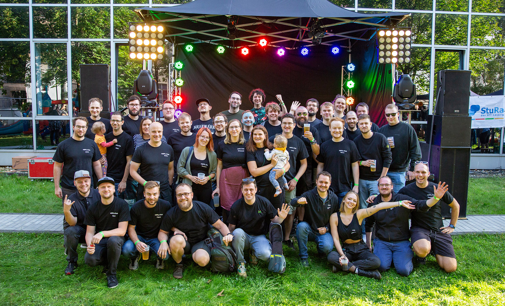

Studierendenclub Stecker 🔌
Es ist vorbei! Nachdem der Stecker 2020 offiziell geschlossen wurde, haben wir den Verein zum 31.12.2023 aufgelöst.
Wir haben unseren Leipziger Lieblingsclub im September 2023 mit einem großen Fest feierlich verabschiedet. Das letzte Gruppenfoto ist oben zu sehen.
Wir danken euch für die Treue über die Jahre, die tollen Partys und alles, was wir zusammen mit euch erleben durften.
Behaltet euren "Stecker" in guter Erinnerung!
Impressum: HfTL Studentenverein e.V., Eichendorffstr. 14, 04275 Leipzig / vorstand@stecker.club